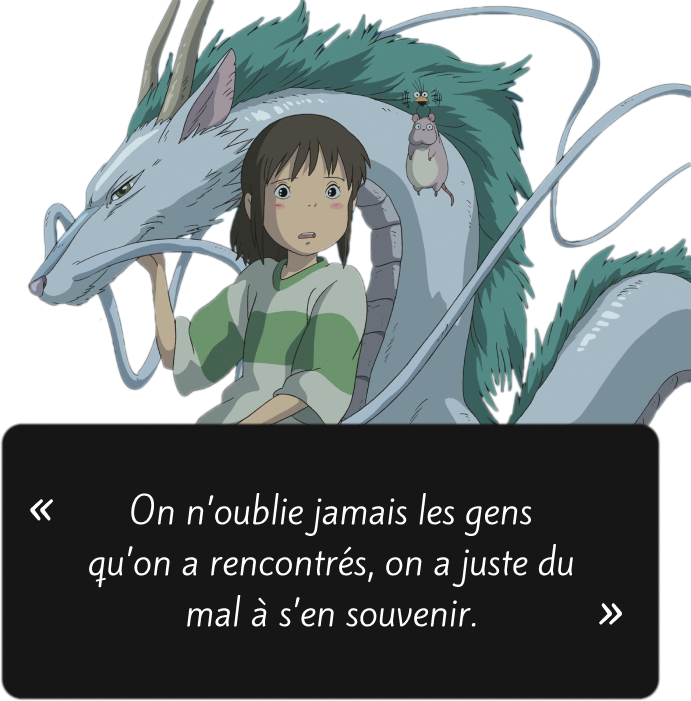
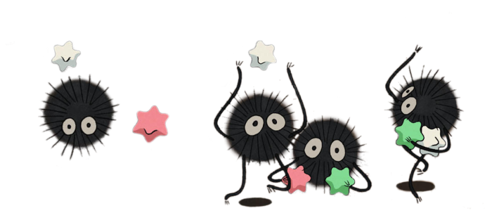
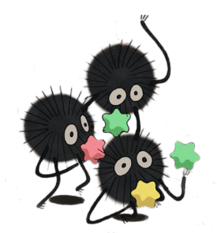
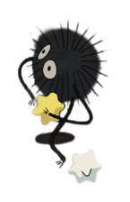
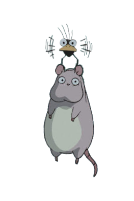

Accueil > Cinéma > Le voyage de Chihiro
LE VOYAGE DE CHIHIRO
Un voyage à travers l’imagination de Miyazaki
Le voyage de Chihiro est un film très riche, rempli de symbolisme et de thèmes qui sont pertinents pour les spectateurs de tous âges. Il est considéré comme l’un des meilleurs films jamais créés par Miyazaki et est devenu un classique de l’animation japonaise. Les thèmes principaux du film sont la croissance personnelle, la maturité et la découverte de soi.
La beauté de Spirited Away : une aventure fantastique dans un monde étrange
L'histoire de "Spirited Away" est celle d'une jeune fille nommée Chihiro qui, après avoir erré avec ses parents dans ce qui semble être un parc d'attractions abandonné, se retrouve coincée dans un monde étrange peuplé de monstres et d'esprits. Ses parents sont transformés en cochons pour les punir de leur gloutonnerie, et Chihiro doit trouver le moyen de les retransformer tout en restant en sécurité. Cette tâche l'entraîne dans une aventure à travers une communauté fantomatique où elle rencontre diverses créatures effrayantes et fascinantes, certaines souhaitant l'aider et d'autres ayant des intentions plus malveillantes.
Je n'ai jamais vraiment aimé les anime, mais j'ai trouvé que "Spirited Away" était un film d'une beauté stupéfiante et d'une créativité incroyable, qui ne ressemble en rien à ce que l'on peut attendre d'un studio d'animation hollywoodien traditionnel comme Pixar ou DreamWorks. Les dessins et les animations des créatures et des esprits de ce film sont tout simplement enchanteurs. Ils vont de dessins simples tels que des grenouilles bipèdes à l'aspect plus complexe de No-Face, un mystérieux personnage masqué qui suit Chihiro pendant une grande partie du film. L'exquis établissement de bains, où se déroule une grande partie du film, ressemble à un palais. L'architecture grandiose et le flot incessant de personnages bizarres dans les couloirs donnent l'impression d'un endroit que l'on visiterait en rêve.

Les événements étranges et captivants de l'aventure de Chihiro
L'aventure de Chihiro comporte également de nombreux événements et séquences étranges qui correspondent parfaitement à la nature étrange et séduisante des images. Qu'il s'agisse de ses interactions bizarres avec l'homme araignée qui travaille dans la chaufferie ou de ses nombreux accrochages avec No-Face, la quête de Chihiro pour sauver ses parents et trouver son chemin dans ce monde perplexe captive facilement le public par ses bizarreries.
Il est difficile de ne pas s'investir dans Chihiro et son voyage. Le public veut qu'elle réussisse, mais l'idée de quitter les bains publics semble triste parce que c'est un endroit si fascinant et magique. Même si le départ est une partie cruciale de ce que Chihiro doit faire, la nature étrange et inexplicablement délicieuse de ce monde nous fait presque souhaiter qu'elle reste.
 La magie envoûtante du monde de Spirited Away
L'histoire de "Spirited Away" est sans aucun doute excellente, mais la véritable magie du film réside dans le monde créé par Miyazaki. Les créatures étranges et la magie vous donnent envie d'y aller et de le visiter, ce qui vous donne envie de revoir le film dès qu'il est terminé. "Spirited Away" comporte certainement des moments étranges, mais j'imagine que n'importe qui sera emporté par l'aura éblouissante, merveilleuse et parfois effrayante du film. Il s'agit d'un film d'animation très différent de ceux des studios d'animation occidentaux, et c'est précisément pour cette raison qu'il faut le regarder.
